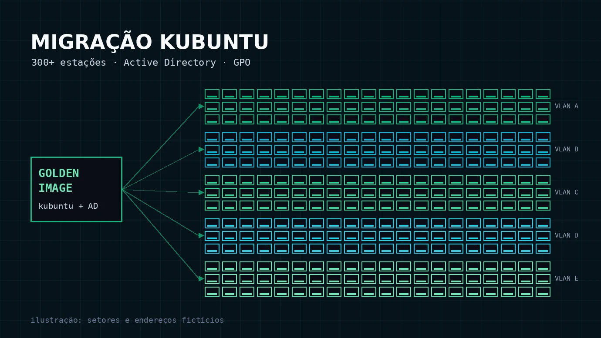

Migração
Kubuntu
300+ estações.
Migração de um parque de mais de 300 estações de trabalho para Kubuntu, integrado ao domínio Active Directory, com implantação por imagem clonada e gestão centralizada por GPO: autenticação, antivírus, atualizações e impressoras.
Contexto institucional. Hostnames, IPs, VLANs e domínios da documentação são ilustrativos e os scripts foram adaptados para portfólio, sem dados internos.

estações de trabalho migradas, conforme a documentação
autenticação e políticas de grupo aplicadas também às estações Linux
antivírus, atualizações, impressoras e hostname distribuídos sem ação manual por máquina
Fonte: documentação pública no repositório tluizlabs. Não há, no material publicado, medição de tempo de implantação, custo ou taxa de falhas.
O desafio
Trocar o sistema operacional de mais de 300 estações não é só reinstalar máquinas. O parque precisava continuar sendo administrado como antes: usuários autenticando no domínio, políticas aplicadas de forma central, antivírus e atualizações sob controle e impressoras configuradas por setor.
Isso exige padronizar a instalação em volume e trazer para o Linux os mecanismos de gestão que o ambiente já usava com o Active Directory.
Minha contribuição
Implantação
Participação na migração: preparação da imagem de referência, replicação para as estações e integração ao domínio, conforme descrito na documentação.
Automação e documentação
Scripts de pós-implantação disparados por GPO, como o que gera um hostname único por estação, e o registro técnico do processo publicado no repositório.
Da imagem de referência ao domínio
- Máquina de referência: instalar e configurar uma estação Kubuntu completa e testada (golden image).
- Captura: capturar a imagem com o Rescuezilla.
- Replicação: restaurar a imagem nas demais estações por boot USB ou pela rede, sem reinstalar máquina por máquina.
- Pós-implantação: script que define o hostname e faz o ingresso no domínio.
- Domínio: integração ao Active Directory com o CID, que permite aplicar GPO a estações Linux.
- Gestão central: antivírus, atualizações e impressoras distribuídos por política.
Problemas e decisões
Hostname duplicado no DHCP
A imagem clonada levava o mesmo hostname para todas as estações, e várias máquinas tentavam se registrar com o mesmo nome no DHCP. Um script Bash, disparado por GPO logo após a instalação, passou a gerar um nome único a partir do setor (VLAN) e do final do IP de cada estação.
GPO em estações Linux
Para manter a gestão centralizada, as estações foram integradas ao Active Directory com o CID, que permite aplicar políticas de grupo ao Linux de forma parecida com o Windows.
Atualizações sob controle
As estações apontam para um mirror apt interno em vez do repositório público: atualizações pela rede local, controle de quais pacotes e versões são distribuídos e menos uso de banda externa.
Impressoras por setor
Seguindo a mesma lógica do hostname, um script disparado por GPO identifica o setor da estação e configura a impressora correta via CUPS, sem configuração manual pelo usuário.
Trecho do script de hostname publicado na documentação (valores ilustrativos):
O que é verificável
O processo, os scripts adaptados e as decisões estão documentados publicamente. Não há fotos nem capturas do ambiente: a documentação foi escrita para não expor a rede da instituição.
O que foi entregue
Resultado documentado: mais de 300 estações migradas para Kubuntu e padronizadas com software livre; antivírus, atualizações e impressoras centralizados por GPO; o conflito de hostname no DHCP identificado e resolvido por automação.
Limites da evidência: o material público não informa período, tamanho da equipe, tempo de implantação por estação, taxa de falhas ou economia. Por isso não apresento números além dos documentados.
O que este projeto demonstra
Migrar centenas de estações sem perder a gestão central exige mais que instalar Linux: implantação em volume por imagem, integração de Linux ao Active Directory, automação disparada por política e diagnóstico de problemas que só aparecem em escala, como nomes duplicados no DHCP.
Este estudo evidencia competências de administração Linux, Active Directory e GPO, implantação em massa, redes (DHCP e VLAN) e automação com Bash, que são o centro do trabalho de um analista de infraestrutura.